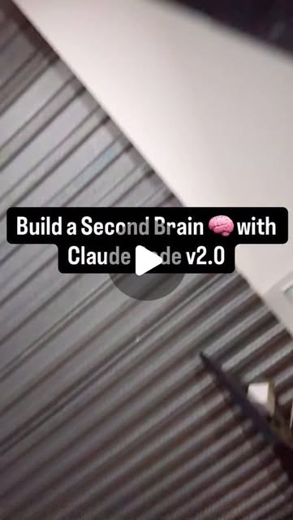

The Self-Improving AI Workspace: Claude Code That Gets Smarter Every Session
Try It — Action Sketch
Set up CLAUDE.md with self-improvement rules → add primer.md for session continuity → connect Obsidian vault → enable parallel worktrees for concurrent work → watch the system compound over weeks.
Connected Posts (6)




Prompt system — run this yourself
Pasteable into Claude Code, Claude, or any agent. One-shot for the whole result, step prompts when you want to steer. Every step carries its own audit; the gap audit makes the agent find and fill what it missed.
Mission. Build a Claude Code workspace with layered persistent memory - CLAUDE.md for rules, a lessons file fed by corrections, primer.md rewritten each session, a SessionStart hook that injects live git state, and an Obsidian vault structured as an LLM wiki with a gap-filling skill - then measure whether it compounds. For a developer who wants Claude to remember across sessions without bloating every prompt. Done means: the layers run automatically, a fixed task set shows fewer repeated mistakes and less re-explaining with memory than without, and the memory files stay under a token budget.
1 · Deeper, not bigger
- What a top professional would do (that you didn't ask for): A developer-productivity engineer would treat memory as a system with a write path, a read path, a size budget and a decay policy. They would measure it: repeat-mistake rate, time to first useful action in a new session, and tokens spent loading context. They would keep CLAUDE.md short because it loads on every turn, and push detail into files read on demand. They would design for staleness and poisoning: a wrong lesson that persists is worse than none, so every lesson has a date, a source and a way to be removed. They would run an A/B: the same tasks in fresh sessions with and without the memory layers.
- Rawest material to start from: 1) Claude Code docs on memory (CLAUDE.md locations and imports), hooks (SessionStart, Stop, PreCompact, UserPromptSubmit) and settings.json. 2) Boris Cherny's original thread and his CLAUDE.md workflow template (plan mode first, subagents, lessons file updated after each correction, verify before done), not the reposts. 3) Karpathy's LLM-wiki gist (raw/ sources, a compiled wiki the model maintains, an index). 4) keshavsuki's primer.md plus memory.sh design: rewrite primer each session; inject last 5 commits, modified files, recent errors and branch at launch; a git hook logging each commit. 5) jens.heitmann's three systems (vault, LLM-wiki structure, self-learning gap skill). 6) Your own past Claude Code transcripts in ~/.claude/projects/ as the real record of repeated mistakes.
- Methods and tools: CLAUDE.md with @imports to keep the root file small; a lessons.md with dated entries (rule, trigger incident, date, source); primer.md with a fixed schema; .claude/settings.json hooks: SessionStart runs memory.sh whose stdout lands in context, Stop or PreCompact prompts the primer rewrite; a git post-commit hook appending to a project log; git worktrees (`git worktree add ../proj-feat feat`) with one session each in tmux or Ghostty tabs; an Obsidian vault with raw/, wiki/, index.md; a token counter (codeburn or /context and /cost) to measure memory load; a fixed task suite of 10 tasks drawn from past transcripts.
- What proves it right: An A/B on 10 fixed tasks in fresh sessions: memory-on vs memory-off, scored on repeated mistakes (from lessons.md list), turns to completion and tokens. Token telemetry from codeburn or /cost showing memory load per session stays under budget. Git history showing primer.md and the commit log updated automatically for 2 weeks without manual edits. A teammate or second machine cloning the repo and getting a correct briefing on first launch.
Rewritten prompt — ask for exactly that:
You are a developer-productivity engineer. Build a layered memory system for this Claude Code project and prove it compounds. Layers: (1) CLAUDE.md under 150 lines holding rules only, importing details with @path; (2) tasks/lessons.md where every correction becomes a dated rule with the incident that caused it; (3) primer.md with a fixed schema (current status, what changed, next up, blockers) rewritten at the end of each session; (4) a SessionStart hook running memory.sh that prints branch, last 5 commits, modified files and the last test failure; (5) a git post-commit hook appending to a project log; (6) an Obsidian vault in Karpathy's LLM-wiki layout with a skill that finds and fills gaps weekly. Set a token budget for everything loaded at session start and measure it. Then build a 10-task suite from my past transcripts where Claude made mistakes, and run it in fresh sessions with memory on and off. Report repeat-mistake count, turns, tokens, and which layer helped. Add an expiry and review rule so wrong lessons get removed. Also set up 3 git worktrees with one session each and record whether they conflict.
2 · One-shot prompt
ROLE: You are a developer-productivity engineer. Stance: memory is infrastructure with a budget, a write path and a decay policy; it must be measured, not admired. CONTEXT: Source posts: Boris Cherny's CLAUDE.md (via keshavsuki and evolving.ai): plan mode first and re-plan when things drift, subagents to keep main context clean, a self-improvement loop where corrections go into tasks/lessons.md, 'never mark a task complete without running tests and checking logs - would a staff engineer approve this?', autonomous bug fixing, 3-5 git worktrees each with its own session, end every correction with 'update your CLAUDE.md so you don't make that mistake again', skills committed to git. keshavsuki: CLAUDE.md is static, so add primer.md rewritten every session, memory.sh injecting last 5 commits, modified files, recent errors and branch at launch, and a git hook logging each commit - 'four-layer always-current context'. jens.heitmann: Obsidian vault, Karpathy's LLM-wiki structure, a self-learning skill that finds gaps and fills them. jesserurka: a librarian agent filing dropped docs and a 2am brain-dump page. alex2learn: export your Claude data and drop it in the vault. Tools: Claude Code hooks and settings.json, git worktrees, tmux or Ghostty, Obsidian. HARD CONSTRAINTS: Everything loaded at session start (CLAUDE.md plus imports plus hook output) stays under 4,000 tokens; measure it. Every lesson has a date, the triggering incident and a source; lessons older than 60 days without a hit get reviewed. No secrets in any memory file or hook output; memory.sh must not print .env contents. Exported Claude conversation data stays local and out of git. Hooks must be fast (under 1 s) and fail open. DELIVERABLES: 1. CLAUDE.md (rules only, under 150 lines) with @imports for detail. 2. tasks/lessons.md seeded from real past mistakes found in ~/.claude/projects/*.jsonl transcripts. 3. primer.md schema and a rule to rewrite it at session end. 4. scripts/memory.sh and .claude/settings.json SessionStart hook; a Stop or PreCompact reminder to update primer.md. 5. .git/hooks/post-commit appending hash, message and files to memory/commits.log. 6. vault/ with raw/, wiki/, index.md, plus a skills/gap-fill skill that lists wiki pages with missing links, stale dates or open questions and proposes fills with sources. 7. Three worktrees with a naming and alias scheme and a WORKTREES.md rule for which files each may touch. 8. EVAL.md: a 10-task suite and A/B results. BUILT-IN GAP ANALYSIS: Keep GAPS.md: layers that did not fire automatically, lessons that conflict, memory that went stale, tasks where memory hurt (wrong lesson applied), token budget overruns. Fill what you can before finishing. SELF-QUESTIONS: How many tokens does session start cost now vs before? Did any lesson get applied where it was wrong? Does primer.md actually get rewritten when the session ends abruptly? Do worktree sessions write to the same primer.md and clobber each other? Is the vault read by Claude on demand, or just sitting there? Would a new teammate understand CLAUDE.md? STOP CONDITIONS: Stop when all layers fire in a fresh session, EVAL.md has A/B numbers, and GAPS.md is written. Stop and ask before importing personal conversation exports into any repo. RETURN FORMAT: A layer table (layer, file, trigger, tokens loaded, verified firing yes/no), the A/B table (task, memory on vs off: repeat mistakes, turns, tokens), and GAPS.md.
3 · Step-by-step prompts
Step 1 — Ground truth: docs, original sources and your own mistake log
Goal: Know the real hook and memory mechanics and the real mistakes worth remembering.
Read the Claude Code docs pages for memory (CLAUDE.md locations, @imports, user vs project scope), hooks (event names, input JSON, how SessionStart stdout is added to context, exit-code behavior) and settings.json. Find Boris Cherny's original thread and template and Karpathy's LLM-wiki gist; save copies to sources/. Then mine your own history: scan ~/.claude/projects/<this-project>/*.jsonl for user messages containing correction signals ('no', 'wrong', 'I told you', 'again', 'don't') and extract the 20 most frequent mistake types with one example each into sources/MISTAKES.md. Measure the current session-start load: open a fresh session and record the /context breakdown and tokens. Write sources/BASELINE.md with that number and the mistake list. Also inventory any memory that already exists (user-scope CLAUDE.md, project CLAUDE.md, existing hooks, auto-memory folders) so the new layers do not duplicate or contradict it.Expect: sources/ with doc notes, the Boris template, the LLM-wiki gist, MISTAKES.md with 20 entries, BASELINE.md with a token number.
Audit before moving on: Every hook behavior you will rely on is quoted from the docs, not inferred. Each mistake has a transcript reference. If there are fewer than 10 real mistakes, note that the A/B will be small.
Step 2 — Rules and lessons layers
Goal: A short CLAUDE.md and a lessons file with a write path and a decay rule.
Rewrite CLAUDE.md as rules only, under 150 lines: plan mode first for anything over 3 steps and re-plan on drift; subagents for searches and heavy reads; verify before done (run tests, check logs, ask 'would a staff engineer approve this'); fix bugs from logs without hand-holding; update tasks/lessons.md after every correction. Move project detail into docs and import with @path only where needed every session. Create tasks/lessons.md with one entry per real mistake from MISTAKES.md: rule, trigger incident, date, source transcript, hits counter. Add the rule: when a lesson fires, increment hits; lessons with zero hits in 60 days are reviewed and either kept with a reason or deleted. Add a rule that lessons conflicting with a newer lesson must be merged, not stacked. Measure tokens loaded at session start again.
Expect: CLAUDE.md under 150 lines, tasks/lessons.md with 10-20 dated entries, a new token number.
Audit before moving on: Check for contradictions between CLAUDE.md rules and lessons; list and resolve. Fail if session-start tokens grew past the 4,000 budget; move text to on-demand files.
Step 3 — Live state layers: primer.md, memory.sh, commit log
Goal: Session state that updates itself.
Create primer.md with sections: Current status, What changed, Next up, Blockers, Open questions, Don't forget; under 150 lines. Add a CLAUDE.md rule: at session end, rewrite primer.md from scratch as a snapshot, not a log. Write scripts/memory.sh: print branch, `git log --oneline -5`, `git status --short` (first 30 lines), the last failing test name if a test log exists, and the first 40 lines of primer.md; never cat .env or any file matching *secret* or *key*. Register it in .claude/settings.json as a SessionStart hook with a 2 s timeout. Add a Stop or PreCompact hook that prints a reminder to rewrite primer.md if it is older than the latest commit. Add .git/hooks/post-commit appending date, hash, subject and changed files to memory/commits.log. Test: open a fresh session and confirm the hook output appears in context; make a commit and confirm the log line.
Expect: primer.md, scripts/memory.sh, hooks in settings.json, post-commit hook, a fresh-session transcript showing injected state.
Audit before moving on: Time memory.sh (must be under 1 s). Run it in a repo with a .env and confirm nothing from .env prints. Kill a session mid-task and check whether primer.md was updated; if not, record the gap and rely on the PreCompact or next-start reminder.
Step 4 — Obsidian vault as LLM wiki with a gap-fill skill
Goal: A knowledge layer Claude reads on demand and maintains.
Create vault/ (or point at an existing Obsidian vault) in Karpathy's layout: raw/ for dropped sources, wiki/ for pages the model writes and maintains, index.md listing every wiki page with a one-line summary and last-updated date. Write skills/librarian: given a file dropped in raw/, summarize it, create or update wiki pages with [[links]] to related pages, update index.md, and record the source path - the jesserurka librarian pattern. Write skills/gap-fill: scan wiki/ for pages with open questions, dead links, no sources, or dates older than 90 days; produce GAPS-wiki.md ranked by how often the page is referenced, and fill the top 3 from primary sources with citations. Add a CLAUDE.md line telling Claude to read vault/index.md before answering project-history questions. If you import an Anthropic data export, keep it under raw/ and add raw/ to .gitignore.
Expect: vault/ with index.md and at least 10 wiki pages, two skills, GAPS-wiki.md with filled items cited.
Audit before moving on: Every wiki page has a source. Check that the gap-fill skill did not invent sources: open 3 citations. Confirm raw exports are gitignored.
Step 5 — Parallel worktrees without collisions
Goal: Run 3 sessions concurrently on one repo safely.
Create three worktrees: `git worktree add ../<proj>-a -b wt/a`, same for b and c. Alias them (e.g. za, zb, zc) and open each in its own tmux pane or Ghostty tab with its own Claude Code session - the Boris setup. Decide shared-state rules in WORKTREES.md: each worktree writes its own primer section or primer.<wt>.md; lessons.md edits go through the main worktree only; commits.log is per worktree. Give the three sessions three independent tasks that touch different files. Record: wall time vs doing them serially, merge conflicts, and any case where a session read stale memory from another branch. Never run `git add -A` in one worktree while another session is editing; stage by explicit path. After merging, remove finished worktrees with `git worktree remove` and prune branches.
Expect: Three worktrees, WORKTREES.md with rules, a timing and conflict table.
Audit before moving on: Merge all three branches; count conflicts and their causes. If memory files conflicted, change the rule and re-test once.
Step 6 — Measure compounding with an A/B
Goal: Prove the memory helps, with numbers.
Build a 10-task suite from MISTAKES.md: each task is one where Claude previously erred (e.g. a wrong path convention, a forbidden command, a style rule). Write the task prompt and a pass check. Run each task in a fresh session twice: memory-off (move CLAUDE.md, lessons, primer and hooks aside) and memory-on. Same model. Record per task: repeated the old mistake yes/no, turns to pass, tokens in and out, and whether a lesson was cited. Also record session-start tokens per arm. Write EVAL.md with the table, totals, and which layer did the work (rules, lessons, primer or vault). Note the cost: tokens added per session by memory vs tokens saved by avoided mistakes. Randomize task order per arm and run each arm twice.
Expect: EVAL.md with a 10x2 table, totals and a layer attribution.
Audit before moving on: Restore memory files after the off arm and confirm they are intact (git diff). If memory-on is not better on repeat mistakes, investigate whether lessons are loaded at all before concluding.
Step 7 — Validate against oracles and write the gap report
Goal: Confirm the system runs unattended and list what is missing.
Check the oracles: fresh clone on another directory or machine gets a correct briefing from hooks on first launch; codeburn or /cost shows session-start load under 4,000 tokens; memory/commits.log has an entry for every commit since setup; primer.md git history shows rewrites at session ends; EVAL.md shows fewer repeat mistakes with memory on. Write GAPS.md: layers that failed to fire, stale or wrong lessons found, worktree collisions, vault pages never read, token budget pressure, and claims from the posts not shown (e.g. 'after a month it knows your code like a senior engineer'). Rank by impact and fix the top two now. Add a monthly maintenance rule to CLAUDE.md: prune lessons, re-measure load, re-run the A/B on 3 tasks, and check vault/index.md freshness.
Expect: VALIDATION.md with an oracle table, GAPS.md ranked with two fixes, a maintenance rule.
Audit before moving on: Each oracle links to output. Unrun oracles are FAIL-UNRUN. Remove claims of compounding that EVAL.md does not show.
4 · Gap analysis and audit
You did not build this memory system. Audit it. Open a fresh Claude Code session in a fresh clone and record exactly what context arrives (hook output, CLAUDE.md, imports) and its token count. Enumerate every claim in VALIDATION.md, EVAL.md and the layer table: tokens loaded, hooks firing, commit log completeness, A/B results, worktree conflict counts. Mark each VERIFIED (reproduced), UNVERIFIED (could not reproduce; why), or FALSE (different result; show both). Specifically: compare `git log --oneline | wc -l` since setup with memory/commits.log lines; run memory.sh in a repo containing a dummy .env and confirm nothing leaks; read tasks/lessons.md for contradictions, entries without sources, and entries that would be wrong in another project; re-run 3 tasks from EVAL.md both arms. Check that raw conversation exports are not in git. List missing pieces (no lesson expiry enforcement, primer not written on crash, vault never consulted, worktree primers colliding), rank by how much they would mislead a future session, fix the top three now, and report what you could not fix and why.
Questions the agent must ask itself before it says done:
- How many tokens does the session-start context cost now, and did I measure it with /context or codeburn?
- Did any lesson in lessons.md get applied in a task where it was wrong?
- Does primer.md get rewritten when a session crashes or is closed without a goodbye?
- Do the three worktree sessions overwrite each other's primer or lessons?
- Does memory.sh run under 1 second and leak nothing from .env?
- Is the Obsidian vault ever read by Claude, and is there evidence in transcripts?
- Did the gap-fill skill cite real sources, and did I open them?
- Which lessons have zero hits, and should they be deleted?
- Is CLAUDE.md still under 150 lines after a week of corrections?
- Did the A/B use fresh sessions and the same model for both arms?
- Are personal conversation exports kept out of git?
- Would a new teammate cloning the repo get a correct, current briefing?
5 · What proves it right
- Fresh clone, fresh session: the SessionStart hook output appears and matches `git log -5` and `git status` run by hand.
- codeburn or /context shows session-start load under 4,000 tokens, before and after a week of use.
- memory/commits.log line count equals commits since setup from `git log`.
- 10-task A/B in fresh sessions: memory-on repeats fewer prior mistakes than memory-off with the same model.
- Three worktree branches merge with conflicts counted and none caused by shared memory files.
6 · Failure modes
- CLAUDE.md bloat. Tell: session-start tokens climb every week. Fix: rules only, details behind @imports or on-demand files, monthly prune.
- Poisoned lesson. Tell: Claude confidently applies a rule that was wrong or project-specific. Fix: dated lessons with sources and a review on zero hits or conflict.
- Stale primer. Tell: primer says 'next up' for work already merged. Fix: Stop or PreCompact reminder plus memory.sh showing primer age vs last commit.
- Hook leaks secrets. Tell: env values in transcripts. Fix: memory.sh whitelists commands and never reads .env.
- Worktree collisions. Tell: merge conflicts in primer.md or lessons.md. Fix: per-worktree primers, lessons edited only on main.
- Write-only vault. Tell: wiki grows, never cited. Fix: index.md read rule in CLAUDE.md and a check in the A/B.
- Compounding claimed, not shown. Tell: no off arm. Fix: the fresh-session A/B on real past mistakes.
7 · Agent direction (unattended runs)
Reach first for the Claude Code hooks and memory docs and the user's own transcripts; cache doc notes in sources/. Never edit global ~/.claude settings without asking - work at project scope. Back up any existing CLAUDE.md, settings.json and hooks before changing them. Spawn a sub-agent to mine transcripts for mistakes (read-only), and another, with no prior context, to run the memory-off arm so it cannot leak memory. Run hooks yourself and time them. Stop and ask before: importing personal data exports, changing user-scope settings, deleting existing lessons or memory. Never print secrets; grep outputs for key patterns. Commit memory files by explicit path so a parallel session's half-written primer is never swept into a commit. Return VALIDATION.md, EVAL.md and GAPS.md plus a layer table with tokens per layer.
Prompt system updated 2026-10-22 · all prompt systems · JSON